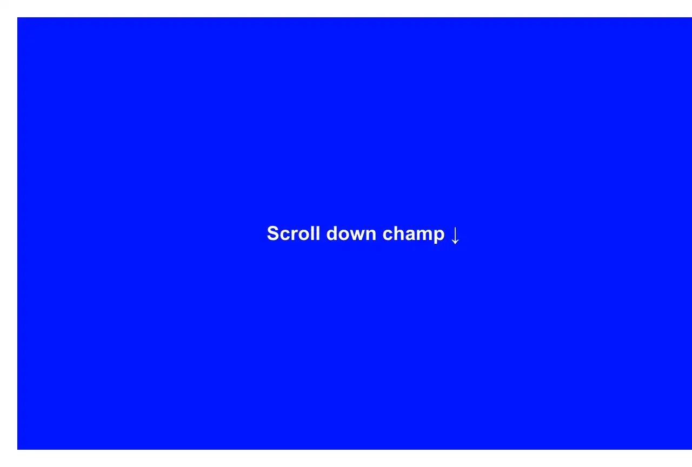

Rendered on the shadcn default neutral palette with harness-generated props.
pnpm dlx shadcn@4.21.0 add @fancy/vertical-cut-reveal-scroll-demo
| licence | ASSET |
|---|---|
| primitive base | none |
| type | registry:block |
| files | src/components/fancy/text/vertical-cut-reveal-scroll-demo.tsx |
| npm deps pulled | none beyond the pre-installed peer set |
| registry deps | https://fancycomponents.dev/r/vertical-cut-reveal.json |
| semantic / palette / hex | 0 / 2 / 2 high retoken cost |
| writes shared ui/ | no |